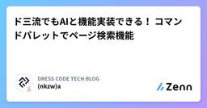

DRESS CODE TECH BLOGのフィード
https://zenn.dev/p/dress_code
DRESS CODEのProduct & Technologyチームによるテックブログです！ プロダクトマネジメントからモデリング、アーキテクチャ、フロントエンド、バックエンド、SRE、セキュリティなどなど様々なテーマで情報を発信しています！
フィード

ド三流でもAIと機能実装できる！ コマンドパレットでページ検索機能 1
1
DRESS CODE TECH BLOGのフィード
tl;dr機能の背景と目的: 開発生産性の向上Tips その 1: Planning をさせるTips その 2: Decision Log を書かせるTips その 3: テックブログを書かせる非エンジニアによる機能開発の学び実装詳細まとめ 機能の背景と目的: 開発生産性の向上コマンドパレットで静的なルートを検索、ジャンプできる機能を開発しました。実装を素早くレビューすることを大義名分としながら、マウスをポチポチしてページを遷移するのが億劫だったのが正直なところです。また、非エンジニアと AI（今回は Cursor の Agent mode）で、機能をリリ...
3日前

ターミナルを使う人は、とりあえず「mise」を入れておく時代。 ・・・を夢見て。
DRESS CODE TECH BLOGのフィード
「mise」ってすごい使いやすいんですよ。miseとは GitHubリポジトリの説明書きに 「dev tools, env vars, task runner」 と書かれているrust製のcliツールです。この記事ではmiseヘビーユーザーの私が推したい生産性の上がる機能を紹介するので、miseを初めて知った人も、知ってるけど使ってないって人も、ぜひ一読してみてください。ちなみに最近話題になりやすいAIツールのcliパッケージなどもmiseで管理できたりします。https://github.com/jdx/misehttps://mise.jdx.dev/ 推したい機能...
16日前
Figma公式のDev Mode MCPサーバーでUIメンテナンスから解放されよう
DRESS CODE TECH BLOGのフィード
はじめにこんにちは、ふるしょうです。DRESS CODEは画面数が既に200を超えており、新規機能開発や既存機能の拡張が目まぐるしく進んでいます。デザイントークンやタイポグラフィをデザインシステムとして運用していますが、画面内のレイアウトや複合コンポーネント、共通UIコンポーネントがFigmaのデザインデータと微妙に「ズレ」ていることが課題になってきています。(絶賛解消に向けて試行錯誤中🔥)今回は、デザインデータとUIのズレを解消する手段として、2025年6月4日にベータリリースされたFigmaのDev Mode MCPサーバーとCursorを活用して既存画面のUIメンテナン...
23日前
【TanStack Query & Table】50のテーブルを運用して辿り着いた、堅牢なDataTable設計
DRESS CODE TECH BLOGのフィード
はじめにこんにちは、ふるしょうです。私たちのチームでは、10のプロダクトを単一リポジトリで開発しており、50個のデータテーブルが存在します。これだけの規模になると、UI/UXの一貫性を保ちつつ、開発効率を落とさないための汎用的なテーブル設計が極めて重要になります。DRESS CODEでは、TanStack Tableをベースにした共通コンポーネント DataTable を開発し、プロダクト横断で統一されたユーザー体験を目指してきました。しかし、先日カスタマーサポートチームから「テーブルのデータが一瞬ちらついて見える」「検索する前から"結果がありません"と表示されるのは紛らわし...
1ヶ月前
ISMS取得備忘録 これから取得する方へ
DRESS CODE TECH BLOGのフィード
About ME生まれたて０歳ベンチャーで、コーポレート何でも屋さんをしている相澤です。法人営業から事業開発を経て、前職で情シスの立ち上げを経験。まだまだ情シス２年生。気がついたら何でも屋になっているのは情シスあるあるだと思いますが、私は何でも屋が情シスに収まったパターンです笑 はじめに今回は、ISMS取得の備忘録です。が、せっかくなのでこれからISMSを取ろうと思っている方の参考になるよう、できるだけ詳しく記していきます。「ここもっと教えて！」をいただければ解説・追記するので、ご連絡・ご相談もお待ちしております💁♂️⚠️注意⚠️本記事は、あくまで私の取得経験...
1ヶ月前
ISMSとSOC 2Type1を 本創業翌月にとった話
DRESS CODE TECH BLOGのフィード
About ME生まれたて０歳ベンチャーで、コーポレート何でも屋さんをしている相澤です。法人営業から事業開発を経て、前職で情シスの立ち上げを経験。まだまだ情シス２年生。気がついたら何でも屋になっているのは情シスあるあるだと思いますが、私は何でも屋が情シスに収まったパターンです笑 はじめに今回は、本創業1ヶ月でISMS / SOC2Type1を取得した話です。プレスリリースはこちら👇https://prtimes.jp/main/html/rd/p/000000002.000160565.html設立（法人登記）は本創業より前ですが、設立日起算でも半年とちょっと。明...
1ヶ月前
詠唱破棄でこの威力...！プロダクト設計は命名が95%
DRESS CODE TECH BLOGのフィード
tl;dr日本から世界へ展開する製品を英語ファーストで設計中プロダクト設計は命名が95%より良い名前にたどり着くための方法その1：複数言語で、名前をつけるより良い名前にたどり着くための方法その2：AIに説明から単語を探させる 日本から世界へ展開する製品を英語ファーストで設計中私は、DRESS CODEという製品の設計をしています。初期リリースの段階から、日本をはじめ、アジア各国での提供が始まっており、グローバルな製品です。FigmaでのUI設計は、意識的に、日本語でなく、英語で行っています。当初は、グローバルにやっていく気概から始めたことです。しかし、続けていく中で...
1ヶ月前
輪読会でAI導入が加速した話──スタートアップで成果を出す「ゆるくて強い」仕組みづくり
DRESS CODE TECH BLOGのフィード
はじめに今年の1月にDress Code株式会社にジョインをして、およそ5ヶ月が経過しました。スタートアップならではの熱量と変化に圧倒されながらも日々楽しく仕事をできています。輪読会を始めて2ヶ月ほど経ったので振り返りも兼ねて、工夫や得られた成果について共有します。成長の手段としての輪読会、より効果高く成果を出すための工夫の1つとして参考になれば幸いです。 得られた成果輪読会を始めたことでこんな成果が出ました、の例。個人が課金していたCursor、会社負担になったCursorのProject Ruleの整備が猛烈な勢いで進んだ社内でNotebookLMに知見が蓄...
1ヶ月前
Zustand × React Context を組み合わせたデザインパターン実践
DRESS CODE TECH BLOGのフィード
はじめにDress Code株式会社で直近HR Forceの開発をしている、ふるしょうです。HR領域のSaaSは、複雑なフォームの機能要件が伴うことが少なくありません。例えば、入社手続きにおける家族情報の登録など、動的フィールドの表示/非表示や編集制御、複雑な依存関係を持つ計算フィールド、再起的な階層構造、同一ページ内に複数の独立したフォームインスタンスが存在する場合の適切な状態管理が必要になります。弊社では、このような複雑なフォーム要件に対応するため、Zustand と React Context を組み合わせたアーキテクチャパターンを採用し、開発を進めています。本記事で...
2ヶ月前
AIの時代だからこそ、型システムがより厳格な静的型付け言語（GoやRustなど）が良いのでは？という話
DRESS CODE TECH BLOGのフィード
はじめにCursorのようなAIのコードエディタがめちゃくちゃ進化してきている、こんな時代だからこそ静的型付け言語、特に厳格な静的型付け言語であるRustとの相性が良いのでは？という話をポエム的に書いてみます。この記事ではあえてRustに特化して比較や検討をしているのは、個人的な好みの問題です笑今の現場では静的型付け言語であるTypeScriptを使っているけど、厳格な静的型付け言語ではないし、実装されているコードも現場や人によって異なることが多くて、AIと共創していくことを考えたときにベターな言語があるんじゃないかって思ってつらつら書いてみます。（TypeScriptって本...
2ヶ月前
前代未聞の挑戦！創業初月アドベントカレンダーを完走しました
DRESS CODE TECH BLOGのフィード
はじめにこんにちは。Dress Code株式会社でプロダクト開発や技術広報をしている、ふるしょうです。Dress Codeは2025年4月1日に正式創業を迎えたばかりのスタートアップです。創業初月、全21営業日に1日1本のテックブログを投稿する「創業初月アドベントカレンダー」 を企画し・完走しました！創業直前までは10本を目標にしていましたが、結果的に21本（うち9本がZennのトレンド入り🎉） を達成できました！この記事では、なぜ創業したてのスタートアップがこのような取り組みをしたのか、どんな工夫で完走できたのか、そして今後の展望を共有します。https://Zenn....
2ヶ月前
おそろしく速い設計… を見逃さずに、設計のスピードを出すことの価値と方法について考える
DRESS CODE TECH BLOGのフィード
tl;dr7ヶ月で3シリーズ8プロダクトの設計をした1人目デザイナーの奮闘設計の速度って重要？ どう上げるのか設計のスピードを出す方法その1：内圧を高めること設計のスピードを出す方法その2：ドメイン知識の習得速度を上げること設計のスピードを出す方法その3：ガードレールを敷いて道を舗装すること 7ヶ月で3シリーズ8プロダクトの設計をした1人目デザイナーの奮闘Dress Code社では、2024年9月の設立からわずか7ヶ月で、国内外あわせて130社を超える企業に導入されています（プレスリリース）。その価値を生み出しているのは、3シリーズ8プロダクトに及ぶコンパウンドプ...
2ヶ月前
プロダクトの価値を追求したくてWebマーケターを辞めました
DRESS CODE TECH BLOGのフィード
2025年4月よりDress Code株式会社のPdMとして入社しました。この記事では、Webマーケターとしてキャリアを積んできた自分がなぜPdMになろうと思ったのか、転職を決めた理由、実際に働き始めて感じたことについてまとめまています。!こんな人におすすめ☑️ Dress Code株式会社のPdMに興味がある人☑️ Webマーケターから次のキャリアを考えている人☑️ 未経験からPdMになりたいと考えている人 簡単な経歴1社目（2015年~2017年)メーカーで経理基礎的な会計知識を獲得2社目（2017年~2021年)Webメディアを運営するスタート...
2ヶ月前
CursorとWindsurfの二刀流！ AI駆動開発でコーポレートサイトを昨日リリースしました！
DRESS CODE TECH BLOGのフィード
tl;dr昨日リリースしたコーポレートサイト構築を振り返って、徒然なるままにAIと人間は掛け算なので、0->1の創造性と100にする品質の責任は人間が担うしかないコーポレートサイトを化石にしない。自社や製品を対外的に発信する装置・プロダクトAIの力を借りても、コーポレートサイト作るのは大変！ 昨日リリースしたコーポレートサイト構築を振り返って、徒然なるままに昨日、創業のプレスリリースならびに、コーポレートサイトのリリースを迎えました。paid workとしてwebsiteをデザインしたことすらないデザイナーである、私がCursorとWindsurfを駆使して実...
3ヶ月前
情シス in 創業メンバーのすゝめ
DRESS CODE TECH BLOGのフィード
About ME生まれたて０歳ベンチャーで、コーポレート何でも屋さんをしている相澤です。法人営業から事業開発を経て、前職で情シスの立ち上げを経験。まだまだ情シス２年生。気がついたら何でも屋になっているのは情シスあるあるだと思いますが、私は何でも屋が情シスに収まったパターンです笑 はじめに今回は、ベンチャーの創業メンバーに情シスがいるのっていいね👍 って話です。「まずは営業やエンジニアで拡大して、管理部門はゆくゆく整備を」って方々に少しでも「確かに情シスだけでも早めにいたほうが・・・・」って共感が生まれると嬉しいです。 「情シス」って？そもそも、情シスと一口に言っ...
3ヶ月前
Figma MCP × Cursor Agent Modeだけでコーポレートサイトを開発できないかトライしてみた話
DRESS CODE TECH BLOGのフィード
はじめに4月で正式創業を迎えたDress Code株式会社で働いているかわうそです。今回は正式創業を迎えるにあたり、コーポレートサイトを公開したのですが、コーポレートサイトをCursorのAgent Modeを活用して、どこまで乗り切れるのか試しみました。ということで、どんな風にトライしたのかについて簡単にご紹介します。（ついでに、Figma MCP × Cursor Agent Modeだけでは無理でしたw多少、実装してますw）!丁寧に解説というよりはコーポレートサイトをCursorのAgent Modeで進めた時のログだと思っていただければと思いますw 前提...
3ヶ月前
Node.jsで動いているLambdaをRustに移行してみた
DRESS CODE TECH BLOGのフィード
TL;DR移行前のLambdaパッケージタイプ：Zipランタイム：Node.js 20.x移行後のLambdaパッケージタイプ：Imageランタイム：Rustあくまで試しにやってみたときの作業ログ程度の内容!Rustに移行したわけではないので、移行の背景等は記載していません。シンプルに移行できるかを試してみた時のログになります。 移行対象Cognitoの認証時に設定しているPre token generation Lambda triggerが対象Pre token generation Lambda trigger内ではBackend...
3ヶ月前
創業したての僕らが、React TokyoのGoldスポンサーになった理由
DRESS CODE TECH BLOGのフィード
はじめに：創業ホヤホヤですが、スポンサーになりました！こんにちは！Dress Code株式会社でプロダクト開発をしている、ふるしょう です。Dress Code株式会社は、2024年9月に準備を開始し、2025年4月、ついに正式創業を迎えました。そしてなんと！会社のコーポレートサイトも未公開なんですが（笑）、創業したまさにその月、2025年4月から、React TokyoコミュニティのGoldスポンサー、そして通年コミュニティスポンサーとして応援させていただくことになりました！🎉「え、コーポレートサイトもないのに！？ 正気？」と思われるかもしれません。この記事では、React...
3ヶ月前
私の知らなかったLocaleの世界
DRESS CODE TECH BLOGのフィード
はじめにこんにちは、ふるしょうです。DRESS CODEの開発で、JavaScriptの国際化対応 APIに関するMDNを読み進めていたときに、localeが「country」ではなく「region」として扱われている点が気になり、ECMAScriptの仕様や関連する国際標準を掘り下げました。その過程で、localeの背後にある複雑な構造と、WEB標準の設計思想に触れることができました。本記事では、その調査で得た知見を共有しつつ、i18n対応に取り組むエンジニアが直面する課題の具体的な視点を紹介します。 i18nとは？i18nは、多様な言語や地域、文化に適応させるための...
3ヶ月前
おーい磯野、インドネシアの個人情報保護法の対応しようぜ
DRESS CODE TECH BLOGのフィード
はじめに最近サザエさん見てないな、と少し寂しく感じながらブログを書きました。中島くんがこのセリフを言っている回探そうかなと思ったんですがYahoo知恵袋にこんな回答がこれまじ？というわけで今回はインドネシアの個人情報保護法に対応したお話をします。 インドネシアの個人情報保護法とは簡単にインドネシアの個人情報保護法について触れます。インドネシアでは個人情報を扱う事業者に対して様々な規制が課されています。中でもデータの扱いに関連する要件として：個人情報データはインドネシア国内にデータソース（コピーでも可）を置く必要があるが挙げられました。今回はこちらにどう対...
3ヶ月前